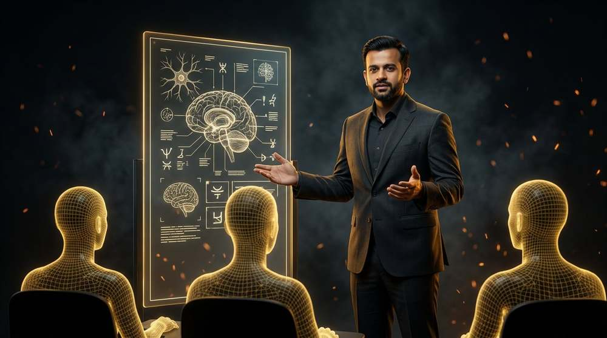
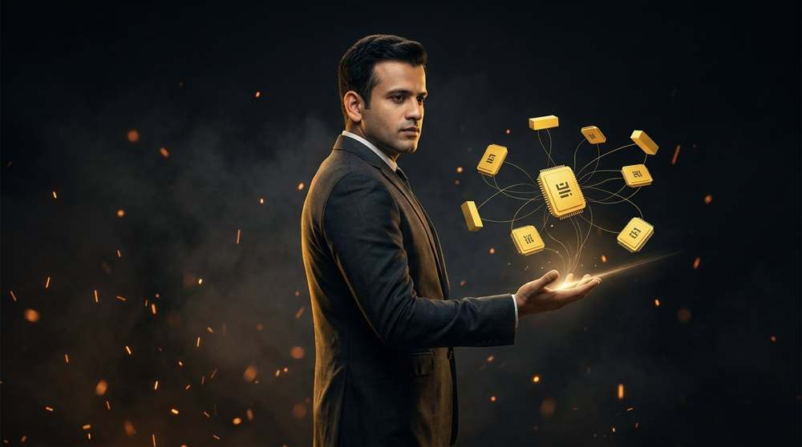

AI IS CHANGING THE WAY WE WORK.
Learn to think faster
Learn how to use AI to think faster, create better, automate smarter and become 100X more productive.
Real workplace experience, turned into practical AI skills you can use on Monday.
THE LEARNING HUB. INTRO REEL.
Your logo film. Use the video controls to turn sound on.
THE FUTURE BELONGS TO PEOPLE WHO KNOW HOW TO WORK WITH AI.
Start your AI journey today.
START LEARNING EXPLORE AILearn AI. Use AI. Build with AI. Grow with AI.
THE LEARNING HUB. Your journey starts here.

ABOUT
Resource Manager with 15+ years of experience in WFM, MIS, and Billing, recognized for optimizing global operational efficiency and streamlining resource allocation. Successfully managed capacity planning, transition management, and onboarding by overseeing end-to-end transitions, coordinating ramp-up/downsizing efforts, facilitating knowledge transfer, and ensuring seamless integration of new teams and processes. Managed projects and implemented automation and analytics solutions to enhance efficiency, prevent revenue leakage, and reduce costs. Responsibilities include key business functions at a senior level: sales, IT, HR, strategic planning, and business process design. Demonstrated expertise in developing high-performing teams and leading strategic initiatives that align business objectives with operational excellence.
LEARN WITH ABHISHEK →What you will learn
Tap a card to open its topics.
100X PRODUCTIVITY LAB
Don't work harder. Build smarter systems.
Let's build it together.AI TOOL LIBRARY

Pricing changes often, so each tool links you to verify current plans.
AI PROMPT LAB
DON'T JUST WATCH. BUILD.
YOUR NEXT CAREER MOVE.
RESUME + LINKEDIN OPTIMIZER
AI-generated suggestions should be reviewed before use. This demo runs locally in your browser with keyword matching; a real AI model can be connected later.
ADVERTISING LAB
15+ YEARS JOURNEY
FROM WORKFORCE TO AI
Technology changes. Learning never stops.